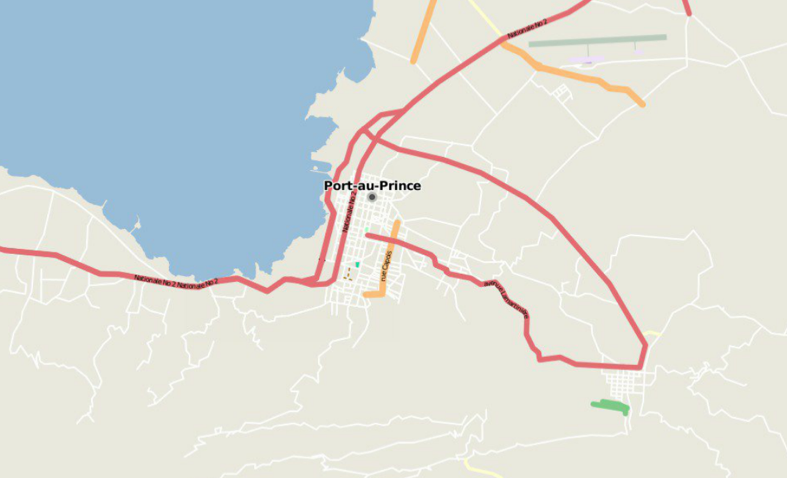

Welcome to Advanced GIS, Lecture 1
This is a web page that can be viewed as slides.
→ to move forward
← to go back
Advanced GIS
Advanced GIS
for International Crises, Development and the Environment
Syllabus
Week 1
What is the geoweb?
Week 2
How does the web work? + CARTO
Week 3
Advanced CARTO and CartoCSS
Week 4
Odyssey, SQL, and GeoJSON
Week 5
HTML
Week 6
CSS
Week 10 - 11
OpenStreetMap
Week 12
Mapbox Studio
Week 13
Final project lab
Week 14 - 15
Final project presentations
Come to class on time. If you're not going to be, email me.
Assignments will be posted in Canvas
Do assignments on time or lose 25% credit.
maps that I've made
Refreshers
latitude and longitude
projections
raster vs vector
raster
vector
vector
GIS
Geographic Information System
GISs

GISs

shapefile
shapefile
clipping
clipping
clipping
clipping
clipping
What do you think of when you think of a "modern" map?
Introduction to the geoweb
"geoweb", AKA:
- new spatial media
- neogeography
- new spatial media
- neogeography
- locative media
- new spatial media
- neogeography
- locative media
- DigiPlace
- new spatial media
- neogeography
- locative media
- DigiPlace
- geocollaboration
- new spatial media
- neogeography
- locative media
- DigiPlace
- geocollaboration
- map hacking
geoweb
geoweb
maps on the internet
geoweb
maps on the internet + the practices and software that get them there
"practices and software"
platforms for working with maps and data
(open) data
adding spatial data to otherwise non-spatial artifacts
(eg, geotagging of pictures on a service like flickr, adding location to tweets, etc)
"practices and software"
- platforms for working with maps and data
- (open) data
- adding spatial data to otherwise non-spatial artifacts
How did we get here?
first web maps were static
click
...wait
entire page reloads,
map is panned east
static online maps are often indistinguishable from paper maps
What has changed since 1997?
~1997 - today
- GPS
- the web changed
- more data became available
- FOSS became mainstream
1. GPS
GPS "selective availablility" turned off (2000)
2. the web has changed
"Web 2.0" (~2004)
Tim O'Reilly
- Britannica Online → Wikipedia
- Britannica Online → Wikipedia
- publishing → participation (podcasting, blogging, etc)
- Britannica Online → Wikipedia
- publishing → participation
- Britannica Online → Wikipedia
- publishing → participation
...
desktop GIS → geoweb
AJAX (2005)
AJAX
(Asynchronous Javascript and XML)
AJAX
(Asynchronous Javascript and XML)
dynamically loading portions of webpages
AJAX
not really new, but newly articulated
3. data becomes more available
open data
open data
data that is:
- accessible (online, in a widely-used format)
open data
data that is:
- accessible (online, in a widely-used format)
- licensed freely
open data
data that is:
- accessible (online, in a widely-used format)
- licensed freely
- usually created by a large entity
How do we give data back?
collaborative data
Haiti in OpenStreetMap before 2010 earthquake

source
Haiti in OpenStreetMap after 2010 earthquake
 source
source
4. open source
Free and open source software (FOSS)
freedoms to
- use,
- study,
- modify, and
- redistribute
source code
source code
in exchange for
- attribution, and sometimes
- sharing your changes under the same license
backed by licenses
backed by licenses
~1997 - today
- GPS
- the web changed
- more data became available
- FOSS became mainstream
Anatomy of a web map
1. Make or reuse base tiles
Street, water and land data
Street, water and land data →
2. Overlay some data
3. Mix with some html, css, and javascript for styles and interactivity
1. Make or reuse base tiles
2. Overlay data
3. Mix with some html, css,
and javascript